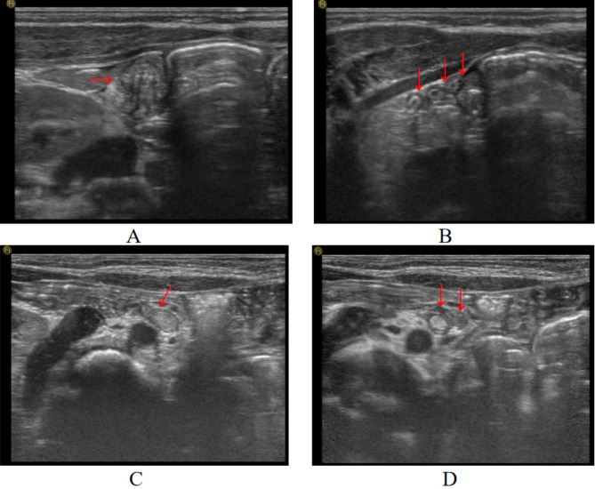
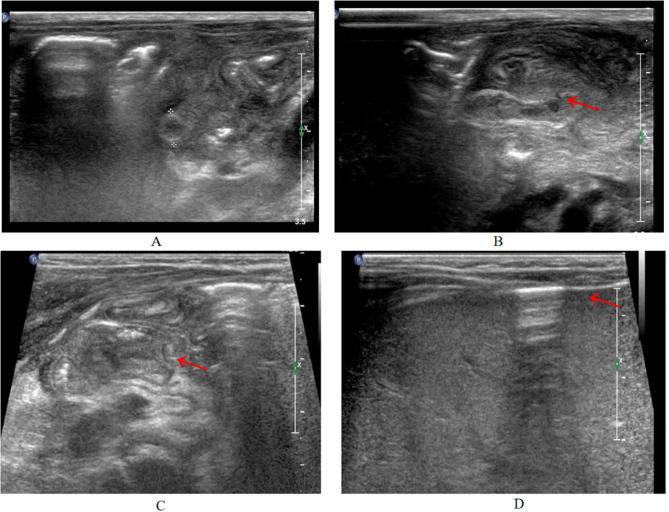
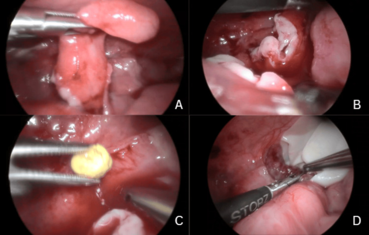
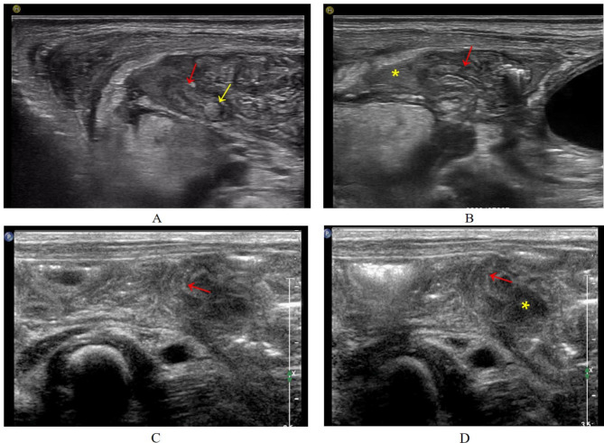

1668 — Viêm ruột thừa ở trẻ dưới 3 tuổi và sơ sinh / Appendicitis in infants under 3 years and in neonates
Tags: pattern:viem-ruot-thua pattern:thung-ruot pattern:o-tu-dich pattern:hoi-tu-do pattern:viem-phuc-mac vung:hoc-chau-phai vung:ruot-thua vung:o-bung protocol:sieu-am-bung protocol:MRI-khong-can-an-than protocol:CT-bung score:Alvarado
Mức chắc chắn (certainty): tổng hợp y văn (literature synthesis) — ghép 2 loạt bệnh nhi (69 ca sơ sinh, Pediatr Investig 2023, PMC10262871, CC BY-NC-ND 4.0; 20 sơ sinh có mô tả siêu âm hệ thống, BMC Pediatr 2024, PMC11562379, CC BY-NC-ND 4.0) + 1 ca nguyên văn 2 tháng tuổi (Cureus 2026, PMC13332841, CC BY 4.0). Không có thử nghiệm ngẫu nhiên nào về mổ ngay vs bảo tồn ở nhóm tuổi này.
Câu chốt: ở trẻ < 3 tuổi, viêm ruột thừa không phải "bệnh của người lớn thu nhỏ" mà là một bệnh khác về mặt cơ chế lan nhiễm: ruột thừa hình phễu, đáy rộng, thành mỏng, ít mạch nuôi, mạc nối chưa phát triển nên không có gì "khoanh vùng" ổ viêm → thủng 80–100% trước 2 tuổi, và màng bụng nhiễm khuẩn toàn thể là biểu hiện đầu tiên chứ không phải biến chứng muộn. Hệ quả thực hành: không có bộ ba triệu chứng cổ điển, không có điểm đau khu trú, xét nghiệm và X-quang có thể BÌNH THƯỜNG — nên chẩn đoán dựa vào siêu âm có chủ đích tìm ruột thừa và ngưỡng mổ rất thấp, không dựa vào điểm số lâm sàng.
1. Tổng quan bệnh học – cơ chế hình ảnh
1.1 Vì sao nhóm tuổi này thủng gần như tất yếu
- Dịch tễ: viêm ruột thừa chiếm < 2% các ca viêm ruột thừa ở trẻ dưới 2 tuổi; riêng viêm ruột thừa sơ sinh (neonatal appendicitis, NA) 0,04–0,2% tổng số ca, và 0,1–0,34% viêm ruột thừa nhi; nam:nữ ≈ 3:1 (PMC10262871, PMC11562379).
- Bốn lý do giải phẫu – sinh lý (được chính các tác giả nêu): (1) ruột thừa sơ sinh hình phễu, đáy rộng → khó tắc lòng do phân/mô lympho; (2) chế độ ăn toàn lỏng; (3) tư thế nằm ngửa thường xuyên; (4) ít nhiễm hô hấp – tiêu hóa trong giai đoạn sơ sinh. Chính vì khó tắc lòng, cơ chế bệnh sinh ở nhóm này không phải "tắc lòng kinh điển" mà là nhiễm trùng/huyết khối vi mạch trên nền non yếu miễn dịch – thiếu oxy – bệnh nền (NEC, Hirschsprung, hẹp hồi tràng do phân su, thoát vị bẹn nghẹt).
- Vì sao thủng sớm và không khu trú (TẠI SAO, phần quyết định hình ảnh): thành ruột thừa sơ sinh rất mỏng, mạng mạch nuôi kém, thành manh tràng đàn hồi thấp; mạc nối (omentum) chưa phát triển nên không có "nắp" mạc nối bịt lỗ thủng như người lớn. Kết quả là dịch viêm + hơi lan tự do toàn ổ bụng thay vì tạo đám quánh khu trú. Trên hình ảnh: dịch tự do nhiều, hơi tự do, dày thành ruột non phản ứng — tức hình ảnh của viêm phúc mạc, không phải của "viêm ruột thừa chưa biến chứng".
- Ngưỡng định lượng nằm lòng (số thật, kèm nguồn):
| Đại lượng | Số liệu | Nguồn |
|---|---|---|
| Tỉ lệ thủng theo tuổi | < 2 tuổi: 100%** · **2–3 tuổi: 83,3%** · **> 5 tuổi: 47,3% | PMC11562379 (dẫn tài liệu 6) |
| Thủng trong loạt 20 sơ sinh | 80% (16/20); hoại tử 35% (7/20); tử vong 5% (1/20) | PMC11562379 |
| Thủng trong loạt 69 sơ sinh | tử vong 2,9% (2/69); 58% điều trị bảo tồn, 42% mổ | PMC10262871 |
| Tử vong theo thời kỳ | 78% (1901–1975) → 23% (1990–2014); y văn gần đây 8–28% | PMC11562379, PMC13332841 |
| Tuổi khởi phát trong loạt 69 ca | trung vị 8 ngày (IQR 9) ở nhóm bảo tồn, 11 ngày (IQR 14) ở nhóm mổ | PMC10262871 |
| Cân nặng nhập viện | 860–4.400 g, trung bình 3.130 ± 730 g | PMC10262871 |
| Đẻ non | 29% (loạt 69 ca) · 30% (loạt 20 ca) | PMC10262871, PMC11562379 |
| Thời gian từ triệu chứng đến chẩn đoán | 1–22 ngày (loạt 69 ca); 2 ngày (IQR 1–6) tới lúc mổ (loạt 20 ca) | PMC10262871, PMC11562379 |
- TẠI SAO xét nghiệm "bình thường" vẫn không loại trừ: viêm phúc mạc sơ sinh không tạo đáp ứng bạch cầu – CRP điển hình ngay. Trong loạt 69 ca: CRP tăng 85,5% (16–160 mg/L) nhưng WBC bình thường 17,4% và giảm 7,2%; bạch cầu trung tính tăng 81,2%. Trong ca nguyên văn 2 tháng tuổi, WBC 5,5 × 10⁹/L và CRP 1 mg/L lúc nhập viện (bình thường), chỉ procalcitonin 14,6 ng/mL, lactat 4,8 mmol/L, base deficit −6,9 mEq/L; CRP nhảy lên 97 mg/L sau ~24–48 giờ. Bài học: PCT/lactat/khí máu dương tính trước CRP — nên một CRP 1 mg/L không được dùng để trấn an.
- Vì sao X-quang hay bình thường: hơi tự do lượng ít ở sơ sinh không nằm dưới cơ hoành kiểu người lớn (trẻ nằm ngửa, hơi tụ trước gan). Trong loạt 69 ca: 66 phim bụng — chỉ 6 ca có hơi dưới cơ hoành, 41 ca chỉ có chướng hơi/ứ trệ, 9 ca tắc ruột không hoàn toàn. Ở ca nguyên văn 2 tháng tuổi, X-quang bụng hoàn toàn bình thường.
1.2 Siêu âm: vì sao đo được ruột thừa ở sơ sinh, và đo cái gì
- Thành bụng sơ sinh rất mỏng → đầu dò linear 5–13 MHz (loạt 20 ca dùng L12-5/L74M) cho độ phân giải < 1 mm, đủ thấy từng lớp thành và dịch trong lòng.
- Mốc giải phẫu để tìm ruột thừa: dấu "mũ nấm" (mushroom sign) — cuống = hồi tràng tận, mũ = manh tràng; đáy ruột thừa nằm ở đầu tận cùng manh tràng; nếu không thấy quanh hồi tràng thì phải tìm dọc rãnh đại tràng phải (right paracolic gutter).
- Ruột thừa sơ sinh bình thường: cắt ngang tròn, đường kính < 4 mm, thành phân lớp rõ, không dày thành, không dịch trong lòng; chiều dọc là cấu trúc dạng ống, đáy bịt (blind-ending).
- Dấu hiệu của viêm (loạt 20 ca): đường kính 4,6 ± 1,8 mm; trong 11 ca đo được, 8 ca (73%) ≥ 4 mm; thành 1,5 ± 0,5 mm; mất phân lớp thành; dịch trong lòng 30%; dịch quanh ruột thừa 25%. Dấu hiệu gián tiếp: dịch tự do 50% (sâu 18 mm), dày thành ruột non hố chậu phải 30%, mờ mạc treo hố chậu phải 20%, hơi tự do 20%, viêm phúc mạc – ổ áp-xe 15%, dày thành bụng 10%.
- Giới hạn cứng của siêu âm (phải nhớ khi đọc): ruột thừa chỉ thấy được ở 65% (13/20), không thấy 35%; không ca nào có siêu âm bình thường (tức "không thấy gì" ≠ "không bệnh", mà là dấu hiệu gián tiếp luôn có); siêu âm phát hiện thủng 12/16 (75%); 3 ca không kết luận được vì hơi ruột nhiều. Đây là lý do phải đọc cả dấu hiệu gián tiếp, không chỉ chờ "thấy ruột thừa".
2. Mẫu hình + chẩn đoán phân biệt theo tuổi (gamut)
Chia gamut theo tuổi vì đây là biến quyết định: cùng một hình ảnh "dày ruột + dịch tự do", chẩn đoán khác nhau ở sơ sinh và ở trẻ 2 tuổi.
- Sơ sinh (0–28 ngày) — "bụng cấp sơ sinh": viêm ruột thừa thủng · NEC (comorbidity 20,3% trong loạt 69 ca — tức 1/5 ca viêm ruột thừa sơ sinh đồng thời có NEC) · xoắn ruột non do malrotation · viêm đại tràng do Hirschsprung (4,3% trong loạt) · hẹp/tắc hồi tràng do phân su · thủng dạ dày tự phát · viêm phúc mạc do phân su.
- Nhũ nhi 1–36 tháng: lồng ruột (intussusception) · viêm ruột thừa · viêm dạ dày – ruột cấp · viêm hạch mạc treo · xoắn buồng trứng · nhiễm khuẩn tiết niệu / viêm thận – bể thận · túi thừa Meckel · thoát vị bẹn nghẹt.
- Thể đặc biệt phải nhớ tên: viêm ruột thừa trong túi thoát vị bẹn (Amyand hernia) — trong loạt 69 ca có 2 ca (2,9%), mổ appendectomy + thắt cổ túi thoát vị cùng lúc; xoắn ruột thừa (appendiceal torsion) — biểu hiện như viêm ruột thừa nhưng không có viêm lòng, chỉ xoắn cuống mạch treo; viêm ruột thừa "nhiễm trùng huyết" khởi phát — trong loạt 69 ca có 1 ca nhiễm khuẩn huyết và 1 ca loạn nhịp tim kháng trị hết sau cắt ruột thừa.
- Mnemonic cho "bụng cấp nhũ nhi" — NICE-V: NEC · Intussusception · Constipation/obstruction · Enteritis/gastroenteritis · Volvulus (và Appendicitis luôn nằm ở cuối danh sách vì hiếm — chính vì thế mới bị bỏ sót).
3. Bảng so sánh phân biệt (ma trận đối chiếu)
| Thực thể (entity) | Hình ảnh điển hình (US / CT / MRI) | Chốt vào (rule-in) | Chốt loại (rule-out) | Gợi ý xác nhận |
|---|---|---|---|---|
| Viêm ruột thừa thủng (sơ sinh/nhũ nhi) | Ruột thừa ≥ 4 mm (sơ sinh; ≥ 6 mm ở trẻ lớn), mất phân lớp thành, dịch trong lòng, mất liên tục thành ± dịch quanh ruột thừa, dịch tự do, hơi tự do trước gan | Thấy ruột thừa dày + mất liên tục thành; hơi tự do trước gan; dịch tự do không giải thích được | Ruột thừa < 4 mm, thành phân lớp rõ, không dịch quanh → loại trừ mạnh (nhưng chỉ thấy được ở 65% ca) | Siêu âm lặp sau vài giờ; mổ nội soi chẩn đoán khi lâm sàng xấu; CT/MRI chỉ khi còn do dự |
| NEC (viêm ruột hoại tử) | Dày thành ruột non + pneumatosis intestinalis (bóng hơi trong thành), hơi trong tĩnh mạch cửa, thành ruột một đoạn dài, thường hồi tràng tận – manh tràng | Pneumatosis + hơi tĩnh mạch cửa + bệnh cảnh sinh non | Một cấu trúc dạng ống đáy bịt dày khu trú → nghĩ ruột thừa, không phải NEC | Phim bụng seri; siêu âm thành ruột; NEC đồng thời 20,3% — đừng dừng ở chẩn đoán NEC |
| Lồng ruột (intussusception) | Khối "bánh mì kẹp"/target sign cắt ngang, "giả thận"/pseudokidney dọc; dấu liềm dịch trong khối | Target/pseudokidney + dấu liềm dịch; khởi phát đau từng cơn – khóc thét – co chân | Cấu trúc ống đáy bịt riêng biệt, không lồng vào lòng ruột khác | Siêu âm là chuẩn; thụt/tháo lồng bằng nước hoặc hơi |
| Xoắn ruột non do malrotation | Dấu "xoáy nước" (whirlpool sign) — mạc treo + mạch treo xoắn; ĐM mạc treo tràng trên đảo ngược; dạ dày – tá tràng giãn | Whirlpool + đảo ngược chiều mạch treo | Mạch treo hướng bình thường, ruột thừa thấy được ở hố chậu phải | Siêu âm Doppler; thụt cản quang/CT khi nghi ngờ cao |
| Viêm đại tràng do Hirschsprung | Đại tràng giãn > đoạn chuyển tiếp hẹp, đầy hơi – phân, không có dịch tự do nhiều | Đoạn chuyển tiếp rõ + tiền sử chậm phân su | Dịch tự do + hơi tự do + ruột thừa dày → không phải Hirschsprung đơn thuần | Thụt cản quang; sinh thiết trực tràng |
| Xoắn buồng trứng | Buồng trứng to, nhiều nang nhỏ ngoại vi, không có tín hiệu Doppler, dịch quanh | Buồng trứng to + mất tín hiệu mạch | Cấu trúc ống đáy bịt + hố chậu phải là nguồn viêm | Siêu âm Doppler; MRI nếu cần |
| Viêm thận – bể thận / nhiễm khuẩn tiết niệu | Thận to, giảm âm vỏ thận, bể thận – niệu quản giãn nhẹ, không có tổn thương hố chậu phải | Ứ nước + thận to một bên | Không có ứ nước, có bất thường ruột thừa | Cấy nước tiểu; siêu âm thận – tiết niệu |

Ảnh 1 — mốc để KHÔNG gọi nhầm: ruột thừa sơ sinh bình thường đường kính < 4 mm, thành phân lớp rõ, không dịch trong lòng. Nguồn: BMC Pediatr 2024, PMC11562379, CC BY-NC-ND 4.0 (nguyên bản).
4. Protocol chụp + quyết định mổ (không có RADS — có sơ đồ quyết định)
4.1 Siêu âm là bước 1, và phải là siêu âm "có chủ đích"
- Đầu dò linear 5–13 MHz, trẻ nằm ngửa, ấn bóp từng bước (graded compression) để đẩy hơi ruột; nếu bụng chướng nhiều, cho nhịn ăn vài giờ rồi quét lại (đúng khuyến cáo của loạt 20 ca).
- Đo và ghi 5 số: đường kính ngoài ruột thừa (mm) · độ dày thành (mm) · có/không mất phân lớp · có/không dịch trong lòng · có/không mất liên tục thành (thủng); cộng dịch tự do (mm), hơi tự do, ổ áp-xe.
- Ngưỡng theo tuổi (quan trọng, dễ sai): người lớn/trẻ lớn dùng ≥ 6 mm; sơ sinh bình thường < 4 mm và trong loạt 20 ca 73% ca bệnh có ≥ 4 mm — nên ở sơ sinh ≥ 4 mm đã là bất thường cần diễn giải cùng các dấu hiệu phụ, không chờ tới 6 mm.
- Khi siêu âm âm tính mà lâm sàng vẫn nghi: lặp siêu âm sau vài giờ (đúng diễn tiến ca nguyên văn: siêu âm đầu chỉ có dịch tự do ít + hạch mạc treo to, siêu âm lần hai mới gợi ý thủng). MRI bụng không cần an thần và CT ít liều là lựa chọn thay thế khi siêu âm không kết luận — nhưng không được để chậm mổ vì chờ hình ảnh.
flowchart TD A[Trẻ dưới 3 tuổi: chướng bụng, nôn, quấy khóc, sốt] --> B[Siêu âm bụng có chủ đích: tìm ruột thừa] B -->|Ruột thừa thấy được, dày, mất phân lớp| C[Hội chẩn ngoại: mổ nội soi] B -->|Không thấy ruột thừa, CÓ dấu hiệu gián tiếp: dịch tự do, hơi tự do, dày ruột, áp-xe| D[Lặp siêu âm sau vài giờ + PCT/lactat/khí máu] D -->|Xấu hơn hoặc dấu hiệu gián tiếp rõ| C D -->|Ổn định, không dấu hiệu gián tiếp| E[Theo dõi sát 12-24 giờ, tìm NEC/lồng ruột/xoắn] E -->|Diễn tiến xấu| C E -->|Ổn định và hết triệu chứng| F[Loại trừ dần; hẹn khám lại]
4.2 Mổ ngay hay bảo tồn?
- Nguyên tắc: ở sơ sinh/nhũ nhi, "chờ đợi có kiểm soát" chỉ dành cho ca có chẩn đoán khác rõ ràng hoặc ca rất nhẹ đã hết triệu chứng — vì thủng 80–100% và không có mạc nối khoanh vùng.
- Bằng chứng thực tế phải nói thẳng: loạt 69 ca (1980–2019) có 58% điều trị bảo tồn (nhịn ăn, nuôi dưỡng tĩnh mạch, kháng sinh cephalosporin thế hệ 3 + metronidazole) và 42% mổ; 1 ca tái phát sau 5 tháng phải mổ nội soi. Nhưng đây là loạt hồi cứu 39 năm ở một trung tâm, có thiên lệch chọn bệnh (nhiều ca "viêm ruột thừa" được chẩn đoán trên siêu âm mà không có mô bệnh), không được dùng để biện minh cho bảo tồn thường quy.
- Khác biệt có ý nghĩa duy nhất giữa 2 nhóm trong loạt 69 ca: thời gian nuôi dưỡng tĩnh mạch 5,5 ± 2,2 vs 8,6 ± 4,5 ngày (p = 0,001); thời gian nằm viện không khác (16 vs 15 ngày, p = 0,268).
- Kỹ thuật: nội soi ổ bụng 4 trocar (2 × 5 mm + 2 × 3 mm), áp lực bơm hơi thấp 4–6 mmHg; nội soi chẩn đoán tránh được mở bụng không cần thiết ở ~53% ca "bụng cấp sơ sinh".
- Kháng sinh: phổ gram âm + kỵ khí (cephalosporin 3 + metronidazole) cho tới khi có kết quả cấy; không có bằng chứng cho việc rút ngắn kháng sinh dưới 7–10 ngày khi đã thủng — chưa rõ ngưỡng chính xác, cần tra thêm.
5. Biến thể bình thường và cạm bẫy
- Ruột thừa sơ sinh bình thường "trông to" hơn bạn nghĩ: đáy rộng hình phễu + cuộn nhiều vòng → cắt ngang thấy nhiều vòng tròn xếp cạnh nhau, rất dễ đọc thành "nhiều ổ áp-xe". Phân biệt bằng chiều dọc: một ống duy nhất, đáy bịt.
- Bẫy 1 — "không thấy ruột thừa = không viêm": sai. 35% ca bệnh không thấy ruột thừa; chẩn đoán dựa vào dấu hiệu gián tiếp. Ngược lại, không ca nào trong loạt 20 ca có siêu âm hoàn toàn bình thường.
- Bẫy 2 — thoả mãn tìm kiếm (satisfaction of search): thấy pneumatosis là dừng ở NEC, trong khi NEC đồng thời 20,3%. Luôn tìm ruột thừa ở mọi ca NEC có bụng chướng nặng hoặc xấu đột ngột.
- Bẫy 3 — xét nghiệm "sạch": ca 2 tháng tuổi có WBC 5,5 × 10⁹/L, CRP 1 mg/L, X-quang bụng bình thường, vẫn thủng đáy ruột thừa + viêm phúc mạc mủ. Nếu chỉ tin CRP/WBC/X-quang thì xuất viện nhầm một ca viêm phúc mạc.
- Bẫy 4 — "đau hố chậu phải" ở nhũ nhi không đáng tin: trong loạt 69 ca, ấn đau chỉ 8,7%, cảm ứng thành bụng 5,8%, viêm mô thành bụng 4,3% — vì thành bụng mỏng, dịch lan, không khu trú. Triệu chứng thật là chướng bụng 52,2% – sốt 27,5% – bỏ bú 23,2% – nôn 21,7%.
- Bẫy 5 — bỏ sót Amyand: 2,9% ca viêm ruột thừa sơ sinh nằm trong túi thoát vị bẹn; luôn khám bẹn – bìu và quét cả ống bẹn khi tìm ruột thừa. Trong loạt 69 ca có 3 ca khởi phát bằng sưng – đau bìu phải (được theo dõi mạch máu tinh hoàn).
- Bẫy 6 — hơi tự do trên phim bụng nằm ngửa: hơi tụ trước gan (thấy ở 4/20 ca = 20% trên siêu âm) chứ không nhất thiết dưới cơ hoành; đừng loại trừ thủng vì "không thấy liềm hơi dưới hoành".
6. Tự lượng giá — Blind Quiz
Ca 1 — Sơ sinh 18 ngày, chướng bụng, bỏ bú. Nhìn 4 khung siêu âm trước, tự mô tả.

- Gợi ý lâm sàng: sơ sinh, chướng bụng nhiều, không sốt cao.
- Câu hỏi: (1) mô tả từng khung A–D; (2) khung nào chứng minh thủng? (3) 3 chẩn đoán phân biệt và dấu hiệu nào loại trừ chúng?
Bấm để hiện đáp án (findings + chẩn đoán)
- Findings: (A) ruột thừa dày, mất phân lớp thành, đo đường kính; (B) mất liên tục thành phía gần (mũi tên đỏ) = thủng; (C) ruột thừa dày, mất phân lớp (mũi tên); (D) hơi tự do giữa thành bụng và gan (mũi tên đỏ) — hơi tự do, không phải hơi trong lòng ruột.
- Chẩn đoán: viêm ruột thừa sơ sinh đã thủng (trong loạt nguồn: 18 ngày tuổi, nữ; 80% ca trong loạt đã thủng lúc mổ).
- Vì sao: thành ruột thừa sơ sinh mỏng + không có mạc nối khoanh vùng → thủng lan nhanh; hơi tự do tụ trước gan vì trẻ nằm ngửa.
- Phân biệt: NEC (sẽ có pneumatosis lan rộng, không có ống đáy bịt dày khu trú), xoắn ruột (whirlpool), Hirschsprung (đoạn chuyển tiếp). NEC đồng thời 20,3% nên vẫn phải kiểm tra.
- Nguồn ảnh: BMC Pediatr 2024, PMC11562379, CC BY-NC-ND 4.0 (nguyên bản, không crop).
Ca 2 — Nam 2 tháng tuổi, sốt 6 giờ, nôn 10 lần, bụng chướng nhẹ. WBC 5,5 × 10⁹/L, CRP 1 mg/L, X-quang bụng bình thường.

- Câu hỏi: với WBC và CRP bình thường, bạn có loại trừ viêm ruột thừa không? Dấu hiệu nào trong ảnh chứng minh chẩn đoán?
Bấm để hiện đáp án (findings + chẩn đoán)
- Findings trong ảnh: (A) ruột thừa phù nề, hoại tử thành lan tỏa; (B) lỗ thủng ở đáy ruột thừa + dịch mủ và sỏi phân (appendicolith) trong ổ bụng.
- Chẩn đoán: viêm ruột thừa hoại tử – thủng đáy + viêm phúc mạc mủ ở nhũ nhi 2 tháng tuổi.
- Vì sao WBC/CRP bình thường không loại trừ: đáp ứng viêm ở sơ sinh/nhũ nhi chậm; ở ca này procalcitonin 14,6 ng/mL, lactat 4,8 mmol/L, base deficit −6,9 mEq/L dương tính trước khi CRP tăng (1 → 97 mg/L sau ~24–48 giờ). Siêu âm đầu chỉ có dịch tự do ít + hạch mạc treo to; siêu âm lần hai mới gợi ý thủng.
- Xử trí: nội soi 4 trocar, bơm hơi 4–6 mmHg, cắt ruột thừa + rửa ổ bụng.
- Nguồn ảnh: Cureus 2026, PMC13332841, CC BY 4.0 (nguyên bản).
Ca 3 — Sơ sinh 13 ngày (A, B) và 4 ngày (C, D). Cùng một câu hỏi: có thủng chưa?

- Câu hỏi: khung nào là thủng + áp-xe quanh ruột thừa? Vì sao "mất phân lớp" một mình không đủ để gọi thủng?
Bấm để hiện đáp án (findings + chẩn đoán)
- Findings: (A) ruột thừa dày, mất phân lớp (mũi tên vàng) + khối phân trong lòng (mũi tên đỏ); (B) thủng phần xa (mũi tên đỏ) với **áp-xe giảm âm quanh ruột thừa (dấu *)**, không thấy cấu trúc ống liên tục; (C) ruột thừa dày, mất phân lớp (mũi tên đỏ); (D) mất liên tục thành (mũi tên đỏ) + áp-xe quanh giảm âm (*).
- Chẩn đoán: cả 4 khung là viêm ruột thừa đã thủng có áp-xe quanh ruột thừa; trong loạt nguồn siêu âm phát hiện thủng 12/16 ca (75%).
- Vì sao: "mất phân lớp" chỉ nói thành đã phù nề/hoại tử, chưa nói đã thủng; thủng cần mất liên tục thành hoặc dịch/áp-xe ngoài lòng.
- Nguồn ảnh: BMC Pediatr 2024, PMC11562379, CC BY-NC-ND 4.0 (nguyên bản).
Bài liên quan chéo
- 161 – Viêm ruột thừa cấp ở người lớn
- 162 – Tắc ruột non: tiếp cận và phân biệt
- 622 – Tắc ruột sơ sinh: phân biệt teo – tắc – xoắn
- 620 – Cấp cứu tiêu hóa sơ sinh – nhũ nhi
Ảnh
- Ảnh dùng nguyên bản, không crop, không ghép: 3 ảnh CC BY-NC-ND 4.0 (PMC11562379) và 1 ảnh CC BY 4.0 (PMC13332841). Chi tiết từng ảnh:
images/CREDITS.md. - Không tạo ảnh ghép: 2 bài nguồn khác bệnh nhân, khác modality (siêu âm vs nội soi), và 3/4 ảnh là NC-ND (cấm phái sinh).
Không dùng để chẩn đoán độc lập khi chưa có người hướng dẫn.